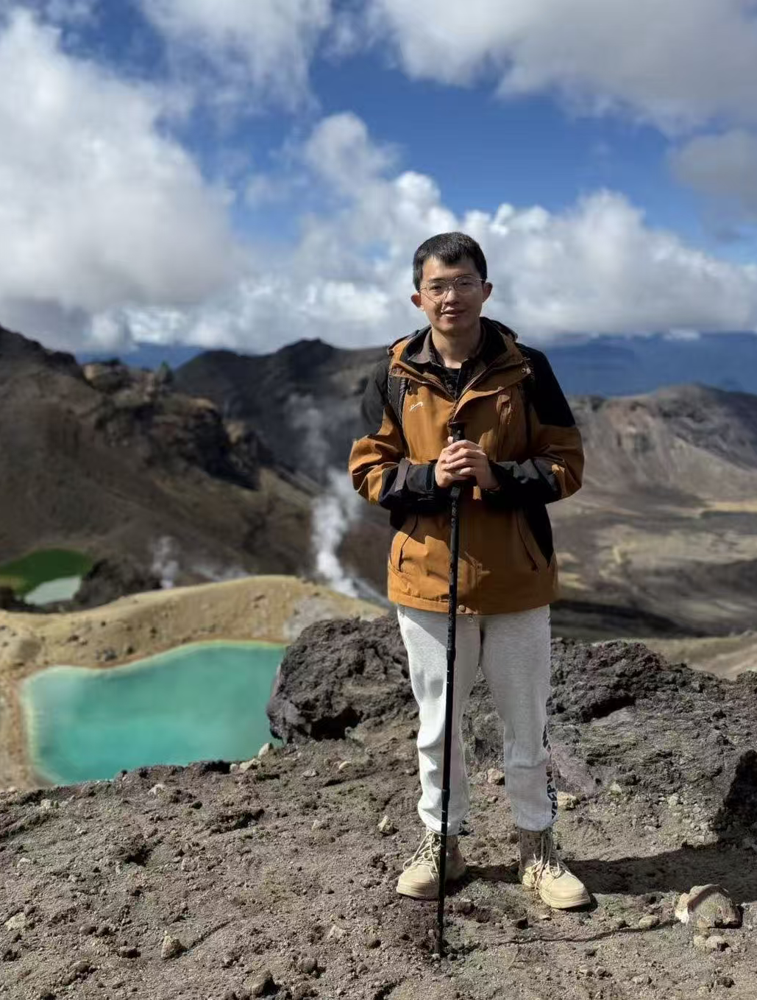

Jiapeng Li (李嘉鹏)
PhD Student / Researcher · Beihang University
Software Engineering · Artificial Intelligence
📧Email: jp_li@buaa.edu.cn
I'm a PhD Student at Beihang University, China. I had the invaluable opportunity to work under the guidance and mentorship of Prof. Zheng Zheng. My research focuses on the intersection of Software Engineering (SE) and Artificial Intelligence (AI), with a particular focus on the quality assurance and testing of Deep Reinforcement Learning (DRL) systems. Furthermore, I maintain a strong interest in Large Language Models (LLMs) and their diverse applications within the field of Software Engineering (LLM4SE). My long-term goal is to contribute to the development of more reliable and trustworthy traditional software and AI systems through rigorous testing and validation.
Selected Publications
- [TOSEM’25] DRLMutation: A Comprehensive Framework for Mutation Testing in Deep Reinforcement Learning Systems
- [ISSRE’25] MDPMorph: An MDP-based Metamorphic Testing Framework for Deep Reinforcement Learning Agents
- [ASE’25] Metamorphic Testing of Deep Reinforcement Learning Agents with MDPMorph
Academic Experience
Supported by a scholarship from Beihang University, I had the privilege of spending six months as a Visiting Scholar at the University of Auckland, New Zealand, in 2025. During this academic exchange, I collaborated closely with Dr. Valerio Terragni on a new research project that focused on metamorphic testing for DRL systems. Beyond the research progress, I deeply cherished the memorable journey and the meaningful connections built with the brilliant researchers at the HASEL and CARES laboratories.
Talks
- [ISSRE’25 Oral Presentation] MDPMorph: An MDP-based Metamorphic Testing Framework for Deep Reinforcement Learning Agents
- [ASE’25 Poster Presentation] Metamorphic Testing of Deep Reinforcement Learning Agents with MDPMorph
Academic Services
- Student Volunteer: The 40th IEEE/ACM International Conference on Automated Software Engineering, Seoul, South Korea.
Teaching
- Discrete Mathematics